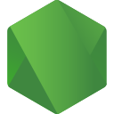
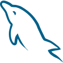
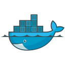
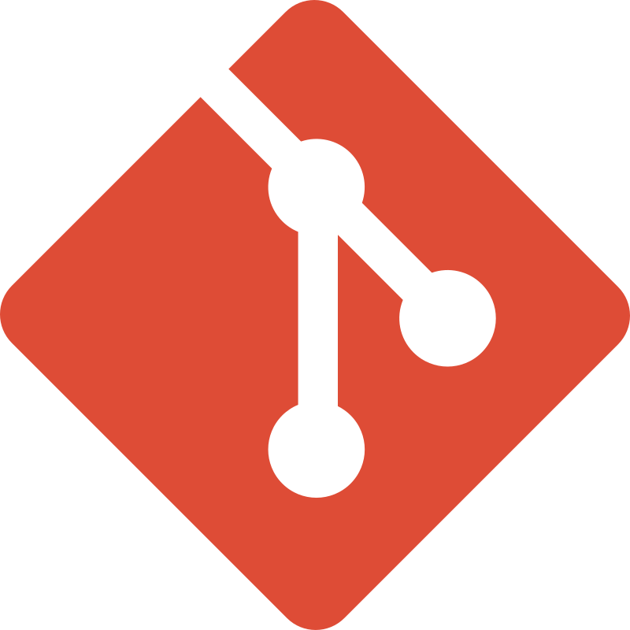
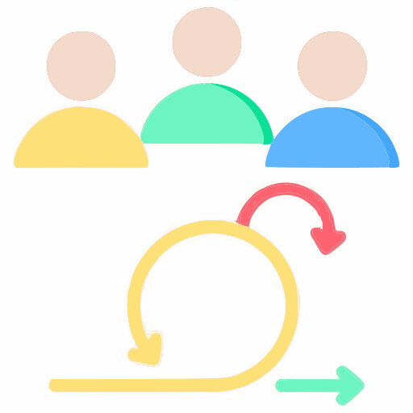
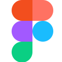
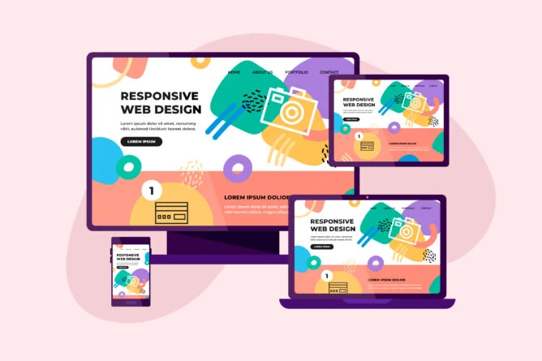

Benutzeroberflächen mit React und TypeScript.
Deine Webentwicklerin
Ich setze Ideen gern in übersichtliche und benutzerfreundliche Webseiten um – mit HTML, CSS, JavaScript und React.
Vor meinem Wechsel in die Webentwicklung habe ich über 10 Jahre an der Universität unterrichtet. Privat probiere ich gern KI-Tools aus, experimentiere mit Design und reise.
Ich freue mich auf neue Projekte und die Arbeit im Team.
Benutzeroberflächen mit React und TypeScript.
Server-Logik und REST-APIs mit Node.js und Express.


SQL und NoSQL: MySQL und MongoDB.


Git und GitHub, Docker und Linux-Grundlagen.
Programmieren mit ChatGPT, Claude und Gemini.

Teamarbeit, Kommunikation, Arbeit mit Jira.


Figma, Canva und responsive Webseiten.
New Life – New Beginning e.V., Rüsselsheim (remote)
IT Career Hub GmbH, Berlin
KEB Dillingen, CEB Akademie Merzig, gaertner hkk Dillingen
Asowsches Maritimes Institut der Nationalen Universität „Odessa Maritime Academy“, Mariupol (Ukraine)
Pryazovskyi State Technical University (Staatliche Technische Universität Asow-Gebiet), Mariupol (Ukraine)
Pryazovskyi State Technical University, Mariupol (Ukraine)
Pryazovskyi State Technical University, Mariupol (Ukraine)
Pryazovskyi State Technical University, Mariupol (Ukraine) · Diplom mit Auszeichnung; laut ZAB-Bewertung auf Master-Niveau
Pryazovskyi State Technical University, Mariupol (Ukraine)
New Life – New Beginning e.V.